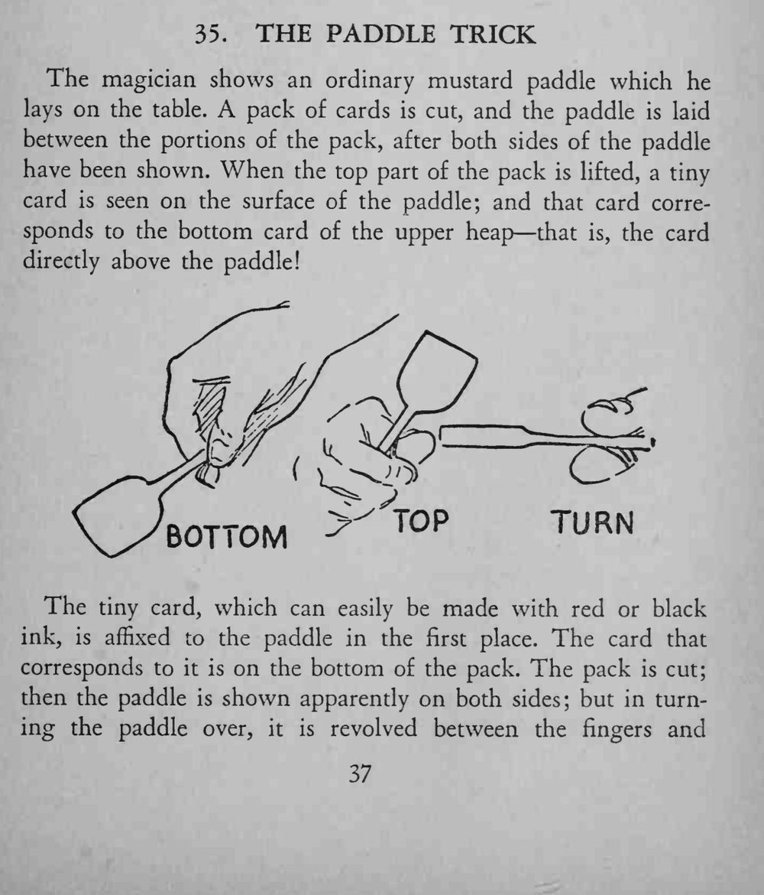
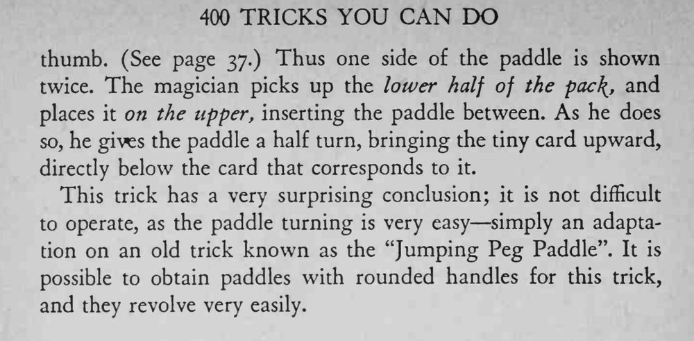

木桨被夹在牌堆中间，再掀开上半叠时，木桨上竟出现一张小牌，正是本来压在木桨上方的那张牌。
翻桨时要在指间旋转，别让人看出只是同一面。


The magician shows an ordinary mustard paddle which he lays on the table. A pack of cards is cut, and the paddle is laid between the portions of the pack, after both sides of the paddle have been shown. When the top part of the pack is lifted, a tiny card is seen on the surface of the paddle; and that card corresponds to the bottom card of the upper heap that is, the card directly above the paddle! The tiny card, which can easily be made with red or black ink, is affixed to the paddle in the first place. The card that corresponds to it is on the bottom of the pack. The pack is cut; then the paddle is shown apparently on both sides; but in turning the paddle over, it is revolved between the fingers and thumb. (See page 37.) Thus one side of the paddle is shown twice. The magician picks up the lower half of the pac\, and places it on the upper, inserting the paddle between. As he does so, he gives the paddle a half turn, bringing the tiny card upward, directly below the card that corresponds to it. This trick has a very surprising conclusion; — it is not difficult to operate, as the paddle turning is very easy simply an adaptation on an old trick known as the "Jumping Peg Paddle". It is possible to obtain paddles with rounded handles for this trick, and they revolve very easily.